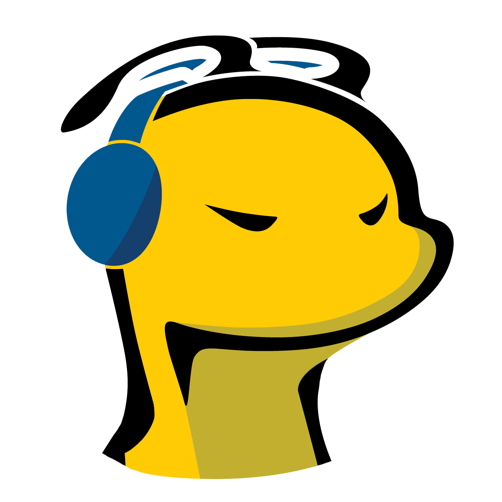

Operations and Analytics Project · 2026
Slug Gaming Executive Operations System
An organization-wide operating tool I led from requirements and
data consolidation through workflow design, implementation, and
executive reporting for a 3,700+ member collegiate gaming organization.
Project Overview
The Project
As President of Slug Gaming, I led a project to consolidate
fragmented operational records into one executive operations
system. The organization managed events, competitive teams,
sponsorships, room usage, officer assignments, tournament
payments, reimbursements, and community growth across several
disconnected spreadsheets and communication channels.
I moved the project from identifying the operational problems
through designing the data structure, defining performance
metrics, building workflows, and delivering a centralized tool
that could support recurring leadership reviews and future
officer transitions.
My Ownership
I acted as the project owner and operations lead. I determined
what information leadership needed, collected requirements from
different teams, organized the source data, created the workbook
structure, defined workflows, and translated organizational
activity into measurable KPIs.
I also aligned the system with the responsibilities of officers,
competitive directors, event leads, partnership leads, and
financial approvers.
Business Problem
-
Operational information was spread across separate spreadsheets,
forms, messages, and officer-owned documents.
-
Leadership could not quickly understand community health,
room demand, partnership progress, event cadence, or payment status.
-
Competitive programs such as NECC and Octane required recurring
registration, roster, scheduling, payment, and approval steps.
-
LAN tournaments involved multiple owners, deadlines, equipment
requirements, purchases, reimbursements, and post-event reporting.
-
Important processes depended too heavily on individual officers
remembering what to do.
-
The organization needed a tool that could support both current
execution and future leadership transitions.
Project Delivery
1
Defined Requirements
Identified the recurring decisions leadership needed to make
across events, esports, partnerships, finance, room operations,
recruitment, and community growth.
2
Consolidated Data
Combined useful information from attendance records, room
check-ins, team rosters, sponsorship tracking, budgets,
reimbursements, merchandise orders, and officer applications.
3
Designed Workflows
Created repeatable operating flows for NECC, Octane, LAN
tournaments, purchasing, reimbursements, approvals, and
financial reconciliation.
4
Delivered the System
Built an executive dashboard, operating review, action queue,
workflow tracker, payment ledger, performance metrics, ownership
fields, and decision-focused reporting.
Organization Impact
3,700+
Community Members Served
30+
Officers Coordinated
600+
Member Growth
530%
Event Attendance Growth
200%
Website Signup Growth
300+
Centralized Submissions
500+
Recorded Esports Room Uses
$4K+
Sponsorship Support Secured
Operational Workflows
Competitive Operations
NECC Workflow
- Confirm participating game titles and competitive teams
- Validate player eligibility and roster requirements
- Assign team directors and operational owners
- Track registration deadlines and league fees
- Submit payment and reimbursement requests
- Document approval and reconciliation status
- Track schedules, results, and follow-up actions
Competitive Operations
Octane Workflow
- Review tournament requirements and available divisions
- Confirm roster availability and participant commitment
- Assign registration and communications ownership
- Track tournament fee, approval, and payment status
- Coordinate match schedules and officer coverage
- Record outcomes and operational issues
Event Operations
LAN Tournament Workflow
- Define event scope, game title, format, and capacity
- Confirm room availability and equipment requirements
- Create the budget and identify purchase needs
- Assign marketing, registration, production, and event owners
- Track signups, staffing, payments, and tournament brackets
- Complete post-event reconciliation and performance review
Financial Operations
Payments and Reimbursements
- Document the purpose and business justification
- Identify the budget source and approving role
- Track requested, approved, paid, and reconciled status
- Record purchase or registration deadlines
- Store receipt and reimbursement confirmation status
- Escalate missing documentation or overdue approvals
Executive Operating Tool
The final system was structured to help leadership understand the
organization within a short operating review. It combines performance
indicators with owners, targets, deadlines, current status, and next
actions.
What the System Tracks
-
Organization health:
membership growth, event attendance, signups, active teams,
officer capacity, and budget activity.
-
Community growth:
Discord acquisition, major event impact, social reach, and
community engagement.
-
Esports room operations:
more than 500 recorded uses, monthly session activity, PC usage,
operational compliance, and issues requiring follow-up.
-
Competitive programs:
league registration, rosters, schedules, payments, deadlines,
and assigned owners for NECC and Octane.
-
LAN tournaments:
planning stages, registration, staffing, equipment, budgeting,
event delivery, and post-event review.
-
Partnerships:
external company relationships, outreach stages, sponsorship
support, activations, and follow-up status.
-
Financial operations:
purchases, reimbursements, league fees, approvals, receipts,
payment status, and reconciliation.
-
Leadership review:
active priorities, responsible owners, risks, decisions needed,
and next actions.
Confidentiality
Public portfolio version:
This case study shows the structure, operating logic, workflow design,
and high-level outcomes of the system. Some organizational details
have been removed, anonymized, generalized, or summarized because
they contain confidential information.
The public version does not include personal information, private
officer records, direct contact information, detailed partnership
discussions, sponsor terms, payment credentials, account details,
private approval conversations, or internal strategic notes.
External Partnerships
The organization worked with gaming, esports, technology, and
community partners. The public dashboard includes high-level company
names and aggregate partnership outcomes, while confidential contacts,
negotiations, fulfillment details, and agreement terms are excluded.
Gen.G
NVIDIA
NRG
Team Liquid
Corsair
SCUF
Razer
Red Bull
Pixio
Extra Life
Tools and Skills
Microsoft Excel
Data Cleaning
KPI Definition
Dashboard Design
Workflow Design
Process Improvement
Project Management
Operations Management
Financial Tracking
Partnership Operations
Risk Tracking
Stakeholder Coordination
What I Learned
This project strengthened my understanding of how a leader takes an
operational problem from discovery through implementation. Building
the dashboard was only one part of the work. The larger challenge
was deciding what information mattered, creating repeatable
workflows, defining ownership, connecting financial and event
processes, and designing a tool that other officers could continue
using.
I also learned that an operating system is most useful when it helps
teams decide what to do next. The final tool connects performance
metrics with deadlines, owners, risks, payment status, and next
actions rather than displaying charts without context.
© 2026 Hamilton Shea